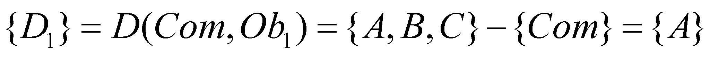

|
|
|
As it was previously mentioned and as we are about to minutely see in chapter 8, the properties of an object, both the qualitative and quantitative ones, are assessed by means of an IPS, the notion of object being valid only for this special type of MS (your brain is also a part of this class, my dear reader). We saw that all the properties of an object must have a simultaneous existence, namely, to have an unique value of a continuous and evenly variable attribute, free from any of the object’s attributes - that is the temporal attribute. The criterion P6 must be fulfilled both for the existence of the elementary and compound objects, otherwise speaking, the total number of objects which are constitutive parts of another object must have a simultaneous existence (even if these are the constitutive elements of our astronomic Universe), and the properties of the constitutive objects shall be added to the properties of our new compound object.
Definition 3.4.1: The compound object is a systemic set of objects, which develops invariant dependence relations between their inner reference systems against an unique reference system which acts externally in relation to all the constitutive objects - inner reference system of the compound object.
Comment 3.4.1: For example, in case of the compound objects from figure 3.3.1, R2 reference is an inner reference for O2-type of object, but an outer one, as regards O3-type of objects from its composition. Similarly, R1 reference is inner reference for the object O1, but an outer one, both as regards O2 and O3-type of objects. The absolute reference R0 is an external reference for any kind of object.
We have noticed that the properties of an object are distributed inside the object’s support domain and they are called inner properties. In case of the compound objects, besides the inner attributes of each component, other properties are also associated to the objects which make-up the object, whose values are determined against the common reference. These properties are therefore external for the constitutive objects, but they are internal for the compound object.
Definition 3.4.2: The external attributes of an object are those properties which are assigned to the inner reference system of an object, and which are determined against an external reference system.
The inner reference of the compound object is therefore a common reference to all the constitutive objects (elements) of this object. Since the attributes of an object must be invariant, the relations between the constitutive objects must be also invariant, because these relations are inner properties of the compound object.
Definition 3.4.3: The external composition of objects is the formation of new objects by means of the combination in a compound object of many objects with invariant relations deployed between their external attributes.
Definition 3.4.4: The internal composition (synonym – model composition) is the formation of new objects by adding new elements to the inner (model) structure of the object.
When the general definition of the object was presented, we talked about a set of properties and afterwards, when we have focused on the elementary object, this set was reduced to a single property. It therefore results that a compound object is also that object which was obtained by means of superposition of some distributions of different attributes on the same support domain. In this case, the support reference remains the same, by adding only the references for the distributions of newly added attributes. Within such a composition, the object’s model structure is altered, so that the result is an internal composition.
Other way of achieving compound objects is by means of the combination of the objects with the same model, but with disjoint support domains. The external attribute which is associated in such case to the elements of the compound object is for instance, the space position of the inner reference system of each element, against the reference system of the compound object. This is an example of the external composition of objects. In this case, the condition that each object to have its own support domain, requires that the support domain of the constitutive objects to be distinct (disjoint). The inner domain of the compound object will be made-up from the union of its inner elements domains.
Definition 3.4.5: The compact object is an object whose inner domain is equal to the sum (union) of the individual inner domains of the constitutive objects.
Otherwise speaking, the inner domain of a compact object does not contain intervals which belong to none of the inner objects, even if this domain is made-up through the combination (composition) of some disjoint domains (which are in contiguous relations). An example of compact object is the political map of the world (see annex X.2), which displays a compound object made-up from the adjacent union of the state’s inner domains, where there is no bit of dry land which was let unassigned to the various existing states. Not any compound object is compact as well; for example, the object called planetary system (PS) is not a compact object, so as the object galaxy (GX), but both types of compound objects have their own reference system against which some elements of the inner reference systems are under invariant dependence relations (invariance between some limits and along certain duration).
The compact objects must comply both with the condition settled by the definition 3.4.5 and by the criterion P4 belonging to the general object model, that is, the global domains of two compound compact objects with a simultaneous existence must be disjoint (adjacent, at most). In case of the material systems, as we are about to see in chapter 7, the support domain is spatial, so that the following basic principle is valid for this class of objects:
Space-time exclusion principle: The inner spatial domains of compact MS with a simultaneous existence must be disjoint, at most, adjacent.
Comment 3.4.2: Space-time exclusion principle of compact MS, deducted according to the object’s existence criteria (criteria mentioned in the general object model section), resulting as a logical conclusion of these criteria, conclusion valid only for a particular class belonging to the general class of objects (which can be also abstract, not only material). The underlining made within the principle enunciation has the role of attract the reader’s attention that the principle is only applicable for the compact objects. As for the non-compact objects, there are domains of the support attribute which were not occupied by objects (that is the interstitial, free domains), which are domains available for other objects with simultaneous existence.
It is very important to notice that the process of objects composition is external for the elements of a compound object (if the components model is unaltered), while in case of the generated compound object, we are dealing with an internal composition because the model of the compound object is totally different as compared to the components model, even if these components are identical.
Comment 3.4.3: A nuclide is a compound object made-up from Z protons and N neutrons; during the process of nuclide formation, the protons and neutrons model remains unaltered, the formation process being external for them. The nuclide’s model shall contain (among others) the number Z and N, otherwise speaking, for nuclear model, the association process of protons and neutrons is an internal composition process.
For a proper operation with objects and with relations between them, before proceeding to a more minutely description of the abstract objects (which shall be made in chapter 9), we shall briefly assert that the representation of an object which is meant for a certain perception organ (sense) is made according to certain rules which links the representation structure (which depends on the inner attributes of the sense organ) to the structure of the represented object. The entire set of these rules makes-up a syntax and each sensorial organ needs its own syntax. For example, as regards the sight perception system of the human, the visual syntax is being used (proper for this sensorial organ), which is divided in two sub-syntaxes: the literal and graphical syntax. In case of the hearing perception system, there is the auditory syntax (which is also divided in the phonetic and musical syntax).
Within the visual-literal syntax (mainly used in this paper), an object Ob is represented with the following simplified structure:
(3.4.1)
where the brackets are the object’s boundaries (even of the elementary object), ex (where X = Ob, A, B etc.) is the existential attribute (quantitative) conjunctively related to the qualitative property X, and the operator op is a composition operator. Between the existential attribute of the compound object (represented by the symbol from the left side of relation 3.4.1) and the existential attributes of their components, there is at least one dependence relation.
Comment
3.4.4: For example, if
the object Ob is the position vector
 of
a point P(x,y,z) from 3D space, the relation 3.4.1 becomes:
of
a point P(x,y,z) from 3D space, the relation 3.4.1 becomes:
(3.4.2)
where the qualitative components have been represented with overlined fonts (directions, versors) and their existential attributes (modules) were represented with normal fonts. Between the existential attribute of the compound object (module r) and the existential attributes of its components, there is the following notorious relation:
(3.4.3)
As for the relation 3.4.1 and its implication, we shall discuss more on other occasions, but for the time being, we are only interested in the fact that the attributes A, B, …F , pointed out in the right member of the relation, make-up the set of qualitative attributes allotted on the inner domain of the object Ob. The support attribute and the reference system do not occur in the literal representation, but there is no need of them anyway, according to the scope of this paragraph. Considering two objects Ob1 and Ob2 with the following structures:
(3.4.4)
(3.4.5)
We may notice that the sets of the model attributes of the two objects are different, but they also have common elements. If we are writing only the sets composition, the object Ob1 has the set {A,B,C} and the object Ob2 has the set {B,C,D}. The intersection set of the two sets is:
(3.4.6)
That is the common component of the qualitative information related to the two objects. Against this common component, considered as a reference, we shall have:
 (3.4.7)
(3.4.8)
which are the specific components (differential, disjoint) of the two objects. These two classes of information components, associated to a set of objects, are basic abstract objects according to the objectual philosophy. Based on these, we would be able to make many things in the following chapters, one of them being the modelling of the information processing systems from biotic IPS, or making us to understand processes which are difficult or impossible to understand so far, such as the abstraction processes deployed in the human mind. The extraction of these components is made by means of abstract processes which occur only within the biotic IPS (for the time being), and they are symbolized in this paper by two types of functions (equivalent with the functions from the programming languages which also represent abstract processes) for the extraction of the common component of the operands, and for the extraction of the specific component Dk of each operand against the common component. Within these functions, and are the function’s operands (arguments), the abstract objects whose common and specific components are interesting for us and which can be as many as possible, but finitary. In case of the relations 3.4.6, 3.4.7 and 3.4.8, these functions are explicitly indicated.
Copyright © 2006-2011 Aurel Rusu. All rights reserved.